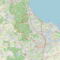
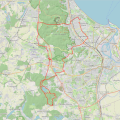
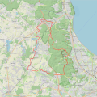
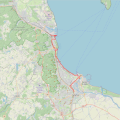
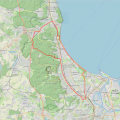

| Przebieg trasy | Mapa (kliknij, aby powiększyć) | Dystans | Opis trasy | Szczegóły trasy |
|---|---|---|---|---|
| Chełm - lasy oliwskie - ścieżka nadmorska |  | 42,3 km | Wyruszamy z Chełmu i sprawnie docieramy przez Morenę do Matemblewa, gdzie zaczyna się leśny odcinek. Po przejeździe pod Słowackiego ruszamy asfaltem w stronę Oliwy. W tej lokalizacji opcji tras jest wiele, ten wariant wycieczki omija zjazd asfaltem przez las, jedziemy zaś drogą gruntową prowadzącą wprost do "drogi węglowej", którą wspinamy się na Owczarnię. Tam, jadąc chwilę "drogą marnych mostów" skręcamy w las, by osiągnąć szczyt doliny Radości, którą zjeżdżamy do Oliwy. Dojeżdżamy do Spacerowej i jedziemy do góry wzdłuż drogi, by finalnie znaleźć się na początku "drogi nadleśniczych" którą kierujemy się w stronę Borodzieja. Skręcamy w bardzo przyjemny zjazd do doliny świemierowskiej, a tam już czeka nas odcinek miejski. Przejeżdżamy nad torami i powracamy wzdłuż morza. | Kliknij tutaj |
| Przymorze - Bursztynowa Góra |  | 52 km | Na Jasień dostajemy się jednym z najłagodniejszych podjazdów - najpierw ulicą Potokową, a następnie drogą z płyt betonowych, która jest jej przedłużeniem. Prowadzi ona przez las wzdłuż potoku Jasień. Po kilkuset metrach skręcamy w lewo, by jadąc po asfalcie minąć stację PKM Gdańsk Jasień. Przejeżdżając w sumie cztery ronda docieramy do Kartuskiej, a następnie skręcamy w prawo w Źródlaną. Po prawej stronie widzimy Jezioro Jasień, skręcamy w lewo i jadąc chwilę wzdłuż wjeżdżamy na wiadukt nad trasą S6. Tuż za restauracją Wróblówka wjeżdżamy do lasu. Tu ma swój początek trasa rowerowa "Wolność jest w naturze". Nie jest ona zbyt trudna, na rowerze trekkingowym też da się przejechać. Oznakowanie jest dość dobre, chociaż w niektórych miejscach znaków brakuje, np. gdy zaraz po skręcie w lewo trzeba skręcić w prawo jest tylko znak mówiący o pierwszej zmianie kierunku. Najkorzystniej jest jechać wzdłuż zachodniego brzegu Jeziora Otomińskiego, a następnie w miejscu opisanym jako "rozwidlenie trasy" skręcić w prawo, by dojechać do rezerwatu "Bursztynowa Góra". Oprócz tajemniczej Bursztynowej Góry, która była miejscem wydobycia bursztynu można zobaczyć Czarny Staw, oraz tereny bagienne. By nie jechać tą samą trasą objeżdżamy jezioro od wschodu. Po krótkim odpoczynku na najpopularniejszej tu plaży kierujemy się dość dziurawą leśną drogą na północ. Jadąc ulicą Otomińską przecinamy Kartuską, kontynuując jazdę Kalinową i przejeżdżając przy ogródkach działkowych docieramy do torów kolejowych oraz zbiornika retencyjnego Kiełpinek. Jest to miejsce warte zobaczenia. Po jego objechaniu skierowaliśmy się najpierw piaskową, a następnie asfaltową Sąsiedzką do Kościoła pw. św. Walentego. Jadąc dalej Jesienną dojechaliśmy do Budowlanych. Teraz już tylko skręt w lewo w Słowackiego i dalej po super DDR do Radarowej. Kontynuując jazdę tą ulicą dojechaliśmy do Owczarni. Dalej już tylko z górki, po drodze mijaliśmy Rezerwat Źródliska w Dolinie Ewy. Kościerską dotarliśmy do Spacerowej a następnie Opata Jacka Rybińskiego. | Kliknij tutaj |
| Wycieczka przyrodniczo-industrialna |  | 39,8 km | Z Dąbrowy Rdestową, Krzemową, Kacze Buki, Myśliborską i Gnieźnieńską do Osowy. Chełmińską, Sambora, Nowym Światem, Planetarną do Barniewic. Lipową, Barniewicką i Piaskową do Rębiechowa. Gdańską, Słowackiego, Słowackiego, Azymutalną, Spadochroniarzy, Słowackiego do Matarni. Kleszą Drogą (zwaną Drogą Siedmiu Garbów), Szwedzką Groblą, Bytowską, Kościerską do Oliwy. Spacerową, Drogą Rynarzewską i Drogą Długa Linia do Gołębiewa. Niebieskim Szlakiem, Orną i Starodworcową do Wielkiego Kacka i Karwin. Chwaszczyńską, Nowowiczlińską i Rdestową na Dąbrowę. | Kliknij tutaj |
| Trasa nadmorska |  | 32,8 km | Łatwa, rekreacyjna trasa z licznymi atrakcjami, którą z chęcią pokona każdy miłośnik roweru. Przez większość odcinków wiedzie wydzielonymi drogami rowerowymi, o doskonałej nawierzchni, wzdłuż morza. Jest to jeden z najbardziej atrakcyjnych i rozpoznawalnych produktów turystyki rowerowej w Trójmieście, z którego w sezonie letnim korzysta wielu mieszkańców i turystów. Trasa jest dobrze skomunikowana z transportem miejskim, przez co bez problemu można dotrzeć na wybrany punkt ścieżki. Dodatkowym jej atutem są liczne punkty gastronomiczne oraz miejsca odpoczynku przez co pokonanie tej 30 kilometrowej drogi jest przyjemne i mało uciążliwe. Proponowana trasa rozpoczyna się przy dworcu kolejowym Gdynia Główna i wiedzie przez Gdynię Orłowo, Sopot oraz nadmorskie dzielnice Gdańska: Jelitkowo, Przymorze, Zaspa, Brzeźno oraz Letnicę. Koniec wycieczki przewidziany jest w okolicach stacji SKM Politechnika Gdańska. | Kliknij tutaj |
| Jesienne Trójmiasto |  | 36,9 km | Trasa zaczyna się w Gdyni i biegnie na terenie malowniczego Trójmiejskiego Parku Krajobrazowego i ścieżkami rowerowymi. Po ok. czterech kilometrach dojeżdżamy do zamkniętego dla ruchu wyasfaltowanego odcinka przy leśniczówce Gołebiewko. (Doskonałe miejsce na treningi także dla kolaży szosowych). Jedziemy asfaltem sześć kilometrów i odbijamy w lewo, by wjechać na punkt widokowy. Z punktu rozpościera się piękny widok na Sopot i Zatokę Gdańską.(Z punktu jest możliwość skrócenia wycieczki i powrotu do Gdyni). Ponieważ czas goni, zjeżdżamy do Sopotu i ścieżkami rowerowymi, których w Gdańsku nie brakuje, jedziemy do Politechniki Gdańskiej, gdzie jesteśmy już umówieni z resztą ekipy. Z politechniki jedziemy nad morze. Jesień to według mnie najlepszy okres na nadmorską ścieżkę. W czasie wakacji staram się ją omijać. Pomimo że ścieżka ma dwa pasy, jest na niej tyle ludzi, że jazda to ciągły slalom. Natomiast jesienią to wymarzone miejsce z dala od samochodów z rześkim powietrzem znad Bałtyku. Dodatkowo przy ścieżce ustawione są latarnie, co umożliwia poruszanie się po zmroku. Ścieżką z mola w Gdańsku (niedaleko są knajpki, można zatrzymać się na herbatkę) jedziemy w stronę Sopotu. Nie ma dużo rowerzystów, pewnie dlatego, że jesień. Szybko robi się ciemno. Dojeżdżamy do mola w Sopocie. Latem ciężko tam przejść, teraz spotykamy tylko kilka osób. Z Sopotu jest plan, by pojechać klifami, jednak w lesie jest już na tle ciemno, że lampki nie wystarczają. Postanawiamy zatem pojechać do domów na kolacyjkę. :) | Kliknij tutaj |
Znasz ciekawą trasę rowerową, którą chciałbyś/chciałabyś podzielić się z innymi? Wyślij ją poprzez formularz kontaktowy
Przejdź na górę strony